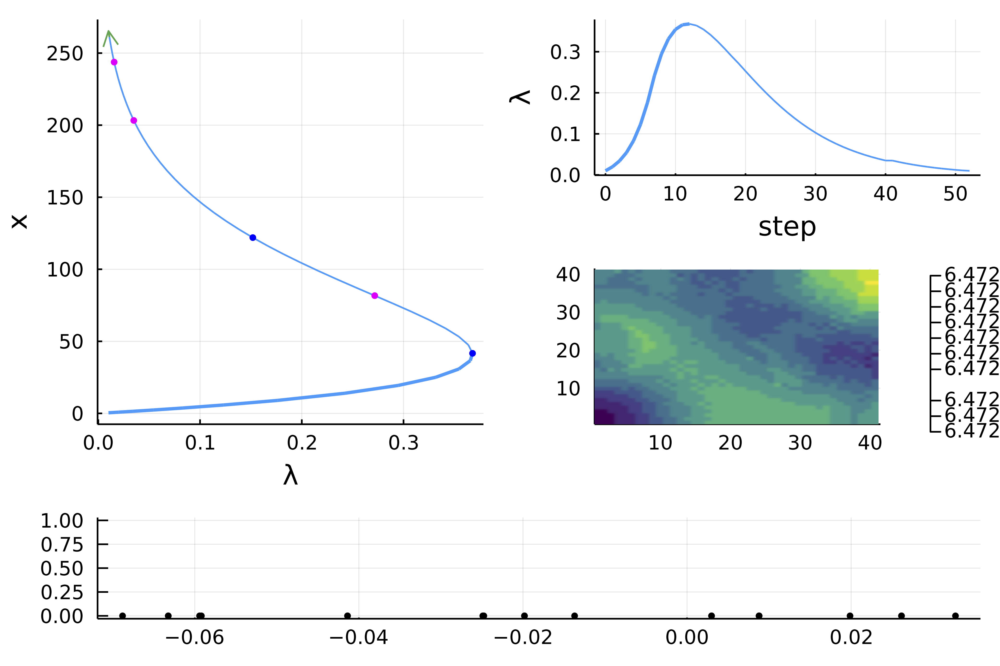
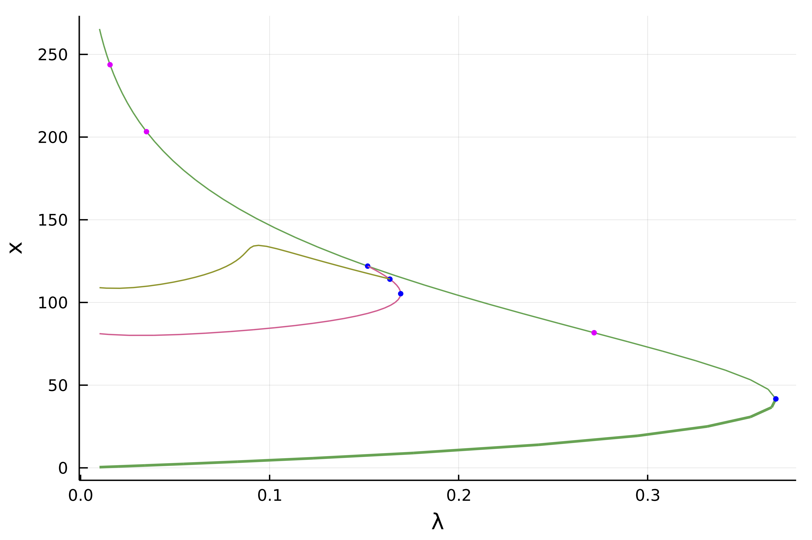
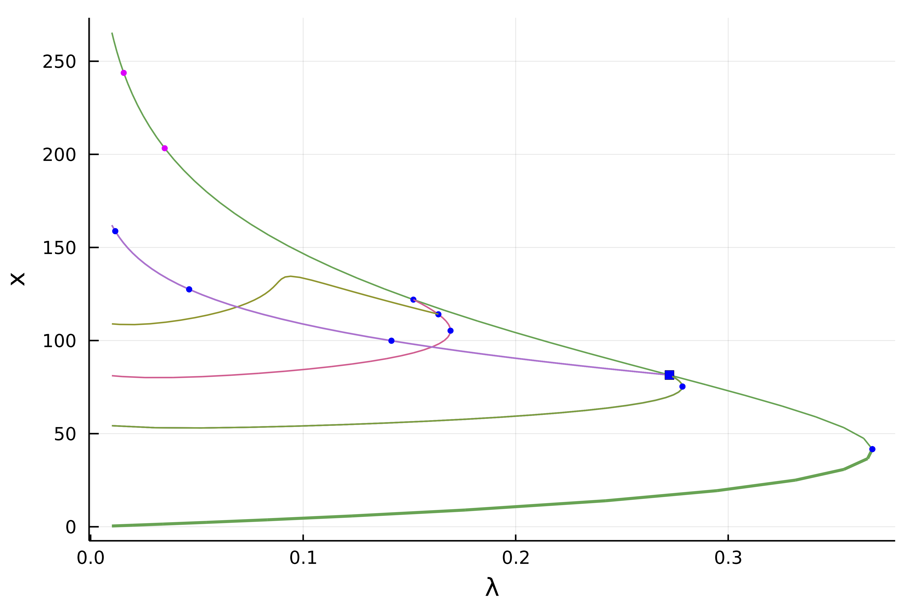

🟡 2d Bratu–Gelfand problem with Gridap.jl
We re-consider the problem of Mittelmann treated in the previous tutorial but using a finite elements method (FEM) implemented in the package Gridap.jl.
Recall that the problem is defined by solving
\[\Delta u +NL(\lambda,u) = 0\]
with Neumann boundary condition on $\Omega = (0,1)^2$ and where $NL(\lambda,u)\equiv-10(u-\lambda e^u)$.
We start by installing the package GridapBifurcationKit.jl. Then, we can import the different packages:
using Revise, Plotsusing Gridapusing Gridap.FESpacesusing GridapBifurcationKitusing BifurcationKitconst BK = BifurcationKitBK.set_plot_backend!(BK.BK_Plots()) # hide# custom plot function to deal with Gridapplotgridap!(x; k...) = (n=isqrt(length(x));heatmap!(reshape(x,n,n); color=:viridis, k...))plotgridap(x; k...) =( plot();plotgridap!(x; k...))We are now ready to specify the problem using the setting of Gridap.jl: it allows to write the equations very closely to the mathematical formulation:
# discretisationn = 40domain = (0, 1, 0, 1)cells = (n,n)model = CartesianDiscreteModel(domain,cells)# function spacesorder = 1reffe = ReferenceFE(lagrangian, Float64, order)V = TestFESpace(model, reffe, conformity=:H1,)#dirichlet_tags="boundary")U = TrialFESpace(V)Ω = Triangulation(model)degree = 2*orderconst dΩ = Measure(Ω, degree) # we make it const because it is used in res# nonlinearityNL(u) = exp(u)# residualres(u,p,v) = ∫( -∇(v)⋅∇(u) - v ⋅ (u - p.λ ⋅ (NL ∘ u)) * 10 )*dΩ# jacobian of the residualjac(u,p,du,v) = ∫( -∇(v)⋅∇(du) - v ⋅ du ⋅ (1 - p.λ * ( NL ∘ u)) * 10 )*dΩ# 3rd and 4th derivatives, used for aBSd2res(u,p,du1,du2,v) = ∫( v ⋅ du1 ⋅ du2 ⋅ (NL ∘ u) * 10 * p.λ )*dΩd3res(u,p,du1,du2,du3,v) = ∫( v ⋅ du1 ⋅ du2 ⋅ du3 ⋅ (NL ∘ u) * 10 * p.λ )*dΩ# example of initial guessuh = zero(U)# model parameterpar_bratu = (λ = 0.01,)# problem definitionprob = GridapBifProblem(res, uh, par_bratu, V, U, (@optic _.λ); jac = jac, d2res = d2res, d3res = d3res, plot_solution = (x,p; k...) -> plotgridap!(x; k...))We can call then the newton solver:
optn = NewtonPar(eigsolver = EigArpack())sol = newton(prob, NewtonPar(optn; verbose = true))which gives
┌─────────────────────────────────────────────────────┐│ Newton step residual linear iterations │├─────────────┬──────────────────────┬────────────────┤│ 0 │ 2.4687e-03 │ 0 ││ 1 │ 1.2637e-07 │ 1 ││ 2 │ 3.3833e-16 │ 1 │└─────────────┴──────────────────────┴────────────────┘In the same vein, we can continue this solution as function of $\lambda$:
opts = ContinuationPar(p_max = 40., p_min = 0.01, ds = 0.01, max_steps = 1000, detect_bifurcation = 3, newton_options = optn, nev = 20)br = continuation(prob, PALC(tangent = Bordered()), opts; plot = true, verbosity = 0, )We obtain:
julia> br ┌─ Curve type: EquilibriumCont ├─ Number of points: 56 ├─ Type of vectors: Vector{Float64} ├─ Parameter λ starts at 0.01, ends at 0.01 ├─ Algo: PALC └─ Special points:- # 1, bp at λ ≈ +0.36787944 ∈ (+0.36787944, +0.36787944), |δp|=1e-12, [converged], δ = ( 1, 0), step = 13- # 2, nd at λ ≈ +0.27234314 ∈ (+0.27234314, +0.27234328), |δp|=1e-07, [converged], δ = ( 2, 0), step = 21- # 3, bp at λ ≈ +0.15185452 ∈ (+0.15185452, +0.15185495), |δp|=4e-07, [converged], δ = ( 1, 0), step = 29- # 4, nd at λ ≈ +0.03489122 ∈ (+0.03489122, +0.03489170), |δp|=5e-07, [converged], δ = ( 2, 0), step = 44- # 5, nd at λ ≈ +0.01558733 ∈ (+0.01558733, +0.01558744), |δp|=1e-07, [converged], δ = ( 2, 0), step = 51- # 6, endpoint at λ ≈ +0.01000000, 
Computation of the first branches
Let us now compute the first branches from the bifurcation points. We start with the one with 1d kernel:
br1 = continuation(br, 3, setproperties(opts; ds = 0.005, dsmax = 0.05, max_steps = 140, detect_bifurcation = 3); verbosity = 3, plot = true, nev = 10, usedeflation = true, callback_newton = BifurcationKit.cbMaxNorm(100), )We also compute the branch from the first bifurcation point on this branch br1:
br2 = continuation(br1, 3, setproperties(opts;ds = 0.005, dsmax = 0.05, max_steps = 140, detect_bifurcation = 3); verbosity = 0, plot = true, nev = 10, usedeflation = true, callback_newton = BifurcationKit.cbMaxNorm(100), )plot(br, br1, br2)We get:

Finally, we compute the branches from the 2d bifurcation point:
br3 = continuation(br, 2, setproperties(opts; ds = 0.005, dsmax = 0.05, max_steps = 140, detect_bifurcation = 0); verbosity = 0, plot = true, usedeflation = true, verbosedeflation = false, callback_newton = BifurcationKit.cbMaxNorm(100), )plot(br, br1, br2, br3...)